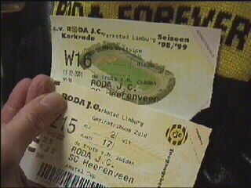
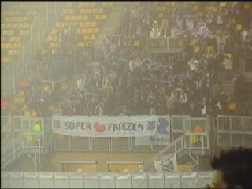
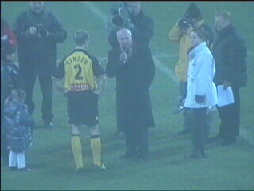
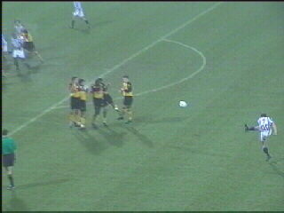
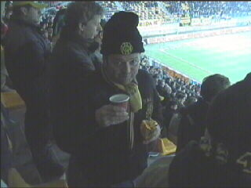
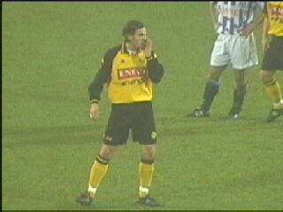
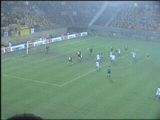
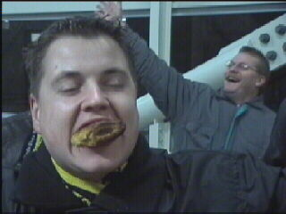
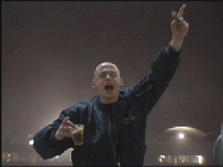

|
Roda JC - SC Heerenveen 0-1 11 december 2001 |

Deze mistige dag begon al met vage toegangs-
kaartjes. Wordt zo'n misdruk niet geld waard?!

Super Friezen is Frysk voor Errug koud!!!

Gerrie Senden werd gehuldigd voor zijn 300e
wedstrijd.

Roda begon met verzorgd voetbal, maar het werd
al ras duidelijk dat Heerenveen attenter was met
de kansen. Hier een van de vele vrije schoppen
en corners.

Van het voetbal werd je niet warm, daarom een
bekertje koffie voor Pee.

Vicelich krijgt steeds meer speelminuten. Verder
is deze pic slechts op verzoek van Daniëlle.

Roda perst er een moedeloos slotoffensief uit
waarin we Kalac als diepste spits ontwaren.
De rust- en eindstand was overigens 0-1 door
een goal van Nurmula.

Bill denkt dat we gewonnen hebben terwijl Ollie
een wentelteefje inslikt.

Ook deze Helden Koempel blijft vrolijk....
©KPD